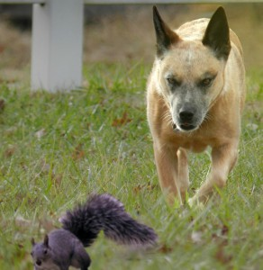

Dogs vs. Small Animals
<b> Dogs vs. Small Animals </b>

"There are many reasons why your dog may chase little creatures, like raccoons, porcupines, skunks and chipmunks, but the most common are curiosity, playfulness and predatory drive."
Hill's Pet , Visit hillspet.com at the link below!